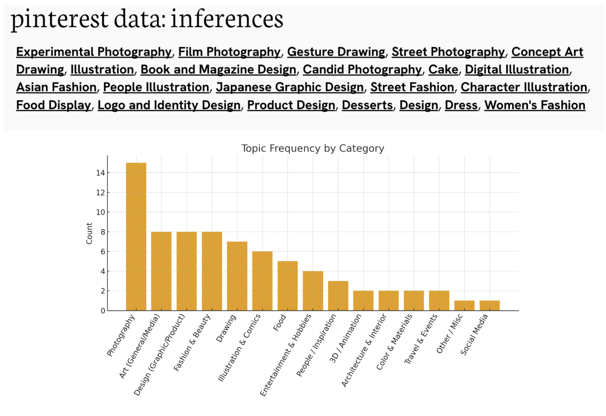

"Word salad" refers to a string of words or phrases that are confused, nonsensical, and/or difficult to understand. Medically, it's a symptom of a thought/personality disorder where words are jumbled into a meaningless collection. Generally, it describes any communication that lacks any sense of substance.
The "word salad" aspect comes into play when the user chooses words, sometimes nonsensically—perhaps trying to string together bits of poetry or meaning, similar to how people who struggle with dysgraphia and schizophrenia have intent to speak, but their words don't come out right.
A data visualization of who the algorithm thinks I am, and who the algorithm thinks the average new user is.
The Sum of Wholes pulls from two perspectives: my tailored images that Pinsage, Pinterest's aggregate algorithm, suggests to me after I've interacted for years and curated a specific "aesthetic;" it also pulls from the perspective of a completely fresh user—the bare bones of a typical, average image algorithm, nontailored at all.
I requested my data from Pinterest, and was provided (among other data) the metatags for what is tailored to my account.
Using a data scraper, I pulled the top 100 images correlated to a specific internal tag (ie: "design," "food," etc.) for both the new user and from my account.
Living in NYC and along the Hudson River, I see a lot of cargo ships coming in and out of the ports. The main questions at play when observing said ships are:
- How does the Hudson River act in this way, in our modern era of automobile vehicular transportation, airplane/aero vehicular transport, and train railways?
- When we see the cargo boats going through the Hudson and docking at the different ports, how much of that cargo belongs to what we've purchased/will purchase on a day-to-day basis?
Gathering data about the PANYNJ came from numerous different sources: the Bureau of Transportation Statistics, the PANYNJ Trade Statistics, U.S. Department of Transportation, etc. To composite an accurate and in-depth collection of data, I used AI (GPT 4o) to help sort through all different forms of data.
Research Process
There were 5 main categories I sorted the cargo imported/exported into:
- Food & agriculture
- Consumer & E-Commerce Goods
- Construction & Raw Materials
- Industrial/Machinery
- Other/Mixed Freight
The FAF uses 43 categories, and the PANYNJ Yearly Trade Reports do not detail every category/commodity that is listed/tracked by the FAF, but only the top 10 commodities. I had to extrapolate with the data I had gathered from the four main sources listed previously.
Utilizing AI for data gathering/data organization:
If the information is displayed on a website (non-PDF), I collect the numerical data and reformat it into an excel sheet, which I then send to ChatGPT to reorganize and recategorize.
If the information is displayed via PDF, I inputted the source PDF itself and gave several strict criterion for GPT to look for and gather into a JSON file:
- Top 10 Containerized Imports (in TEUs)
- Top 10 Containerized Exports (in TEUs)
- Annual total imports (in TEUs)
- Annual total exports (in TEUs)
- Categorized into the 5 main categories determined previously.
Between the years of data collection (2018-2024), the units listed began to shift from TEU's (standardized containerized units) to metric tons. For this, I also required GPT to reconvert metric tons into TEU's for standardization. The general estimate formula for a TEU is: TEUs = (metric tons × 1000) ÷ 24
Generate your own color palettes through either K-Means or Agglomerative Algorithmic Clustering
I first began thinking about machine learning while working on a project in collaboration with the Human Language and Development Lab at the NSSR. I was researching how computers determine color from pictures humans input, and I was inspired by an article software developer Austin Poor wrote about algorithmically determining color palettes from movie stills. https://austinpoor.com/blog/algorithmic-color-palettes
I, too, wanted to use machine learning to determine color palettes, no matter the scene, however many times, so I coded a ML algorithm program (in Vanilla Javascript) that would go through the HSL/RGB colors for all images inputted, and return color palettes for each image depending on which clustering method was utilized. For this project, I chose two ML algorithms: K-Means clustering and Agglomerative clustering.
A visual collection of calories consumed at work
This all started with a rotisserie chicken. At the time, we were researching photogrammetry and LiDAR scanning at the XR Lab, and on a whim, my coworker and I scanned the rotisserie chicken.
For the Apple ecosystem, Apple developed the .USDZ file format, and for a while, I would scan in snacks, pastries, and other meals I had at the lab. From there, I converted the .USDZ files to .GLTF files, providing both for my static sites in order to accommodate as many websites and platforms as possible.